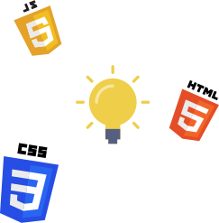

This landing page was created to showcase all of the projects that I’ve completed in the Technical Web Design program at BCIT. The design is inspired by the vertical split screen design trend that I’ve been seeing a lot. This was completed near the beginning of the program where I just finished learning HTML and CSS as well as some basic JavaScript.
View Live SiteI was looking around awwwards for inspiration and noticed a trend of vertical split screens. I decided that this would fit well with what I had in mind for the main homepage, which was to have a short headline with some svg’s beside it.
Since the purpose of this site was mainly to display a list of projects, I wanted to include some images that were relevant. I decided to add the badges of the holy trinity of front-end web development:
